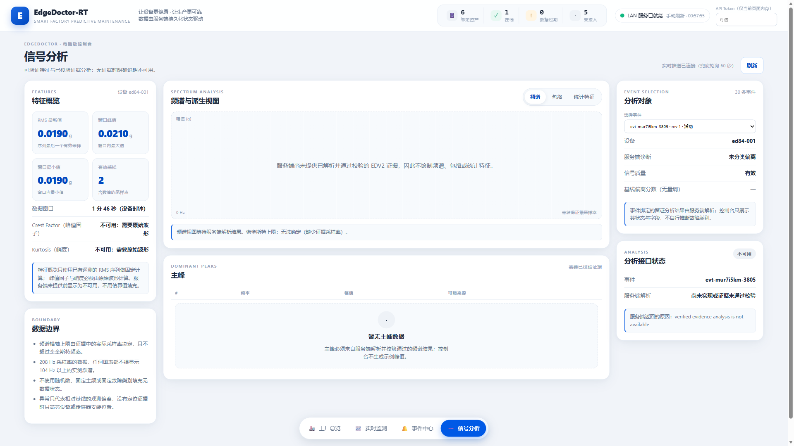
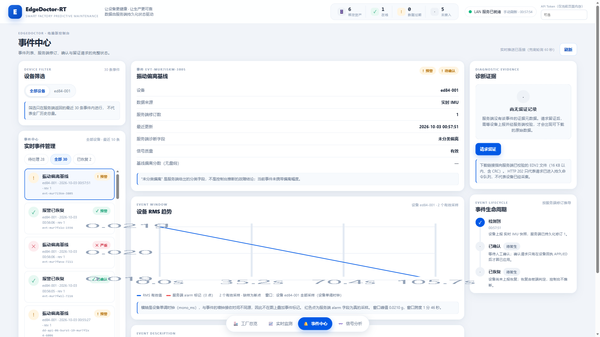

从硬件平台到屏幕交互，从振动分析到诊断结果，一次看懂 EdgeDoctor-RT 的完整工作流程。
面向电机、风机、泵与工业传动系统，EdgeDoctor-RT 将数据分析和模型推理部署在设备侧。 核心诊断无需依赖云端连接，让维护人员在现场直接掌握设备健康状态、识别异常类型并查看处置建议。
从轻量模型到实时任务，从本地屏幕到桌面控制台，EdgeDoctor-RT 将算法能力与可操作的交互体验连接起来。 采集、分析、诊断、展示与记录环环相扣，为旋转机械状态监测提供一套便于演示、复现和扩展的工程方案。
每个有效窗口输出预测类别、置信度、异常分、五类分数、前处理/推理/端到端耗时、丢帧数与后端类型。
| 编号 | 类别 | 维护意义 |
|---|---|---|
| 0 | 正常 normal | 设备状态稳定，继续观察趋势 |
| 1 | 轴承内圈故障 bearing_inner | 检查内圈点蚀、安装与润滑 |
| 2 | 轴承外圈故障 bearing_outer | 检查外圈局部损伤与载荷路径 |
| 3 | 不对中 misalignment | 检查联轴器、轴线和基础安装 |
| 4 | 不平衡 unbalance | 检查转子配重、附着物与叶轮状态 |
概览页给健康度与当前状态；信号页看频谱与输入质量；诊断页解释五类概率与处置建议；系统页给 P50/P95 延迟、丢帧、日志路径与模型信息。
原始样本转为 EdgePack，板端用 edgeai replay <path.edgp> [fast] 回放。实时模式严格按 20 ms 节拍运行，累计 50 个块形成 1 s 窗口，每 25 个块输出一次诊断。
结果经容量 16 的 RT-Thread 消息队列送入独立 edge_log 线程，异步写入 /flash/edgedoctor.csv；日志写入与诊断任务解耦，便于现场回看与问题追踪。
设备监控、诊断分析与事件记录汇聚到桌面界面。通过 MQTT、FastAPI 与 SQLite 连接板端监测和可视化操作，让设备状态与历史记录一目了然。


目标板卡为 RT-Thread Edgi-Talk，主控 Infineon PSoC™ Edge E84，应用运行于 Arm Cortex-M55 + RT-Thread。
在官方 Edgi_Talk_M55_XiaoZhi v1.4.0 工程上集成 EdgeDoctor 应用，
连接轻量诊断模型、板载 IMU 监测与本地屏幕。模型参数编译进片上只读区，诊断日志保存到 /flash 文件系统。
板载 LSM6DS3TR-C 提供现场 IMU 状态监测，并通过 MQTT 连接桌面控制台； EdgePack 支持标准振动样本的板端回放与五类诊断，让现场监测和模型演示都能快速上手。
从数据到决策，再到交互和留痕：主机端完成训练与量化，板端完成窗口处理与本地推理，结果通过快照和消息队列送达屏幕与日志。
| 数据契约 | 定义 |
|---|---|
| Chunk | 20 ms；双轴振动 128 帧 × 2 通道 int16 |
| Window | 1 s，含 50 个 chunk；每 25 个 chunk 输出一次结果 |
| Feature | 64 维归一化振动频带，兼顾特征表达与 MCU 部署效率 |
| Result | 类别、置信度、五类分数、异常分、耗时、丢帧、后端与状态 |
数据集：KAIST Human Lab 旋转机械数据集 v6（DOI 10.17632/ztmf3m7h5x.6，CC BY 4.0），45 条振动记录 × 40 窗口 = 1,800 样本，按记录划分 1400/200/200。
| 评估 | Accuracy | Macro-F1 | 说明 |
|---|---|---|---|
| E1 FP32 留出记录 | 96.50% | 96.44% | Macro-AUC 1.000 |
| E1 动态 INT8 仿真 | 97.00% | 96.95% | Macro-AUC 1.000 |
| E1 静态 Q7 导出 | 96.50% | 96.42% | 与 FP32 预测一致率 99.50% |
在本次 200 窗口留出记录测试中，四种故障类别的召回率均为 100%。静态 Q7 模型保持 96.50% 准确率， 与 FP32 预测一致率达 99.50%，以 2,508 B 参数将五类诊断部署到 MCU。
静态 Q7 模型参数仅 2,508 B，适合资源受限设备的本地部署。
45 条原始记录先划分再切窗，训练、验证、测试分别为 1,400 / 200 / 200 个窗口。
训练量化、板端推理、LVGL 交互、MQTT 接入与桌面可视化相互衔接。
从演示到复现，从设计到源码，一站获取项目资料，开启你的边缘智能诊断实践。
硬件：RT-Thread Edgi-Talk（Infineon PSoC™ Edge E84，Arm Cortex-M55） · 软件：RT-Thread · LVGL · React · Three.js · FastAPI · 许可证：Apache-2.0